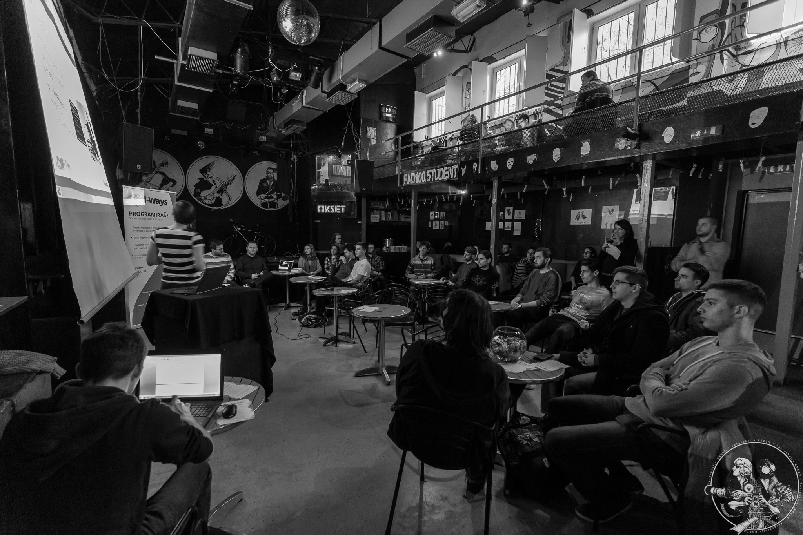
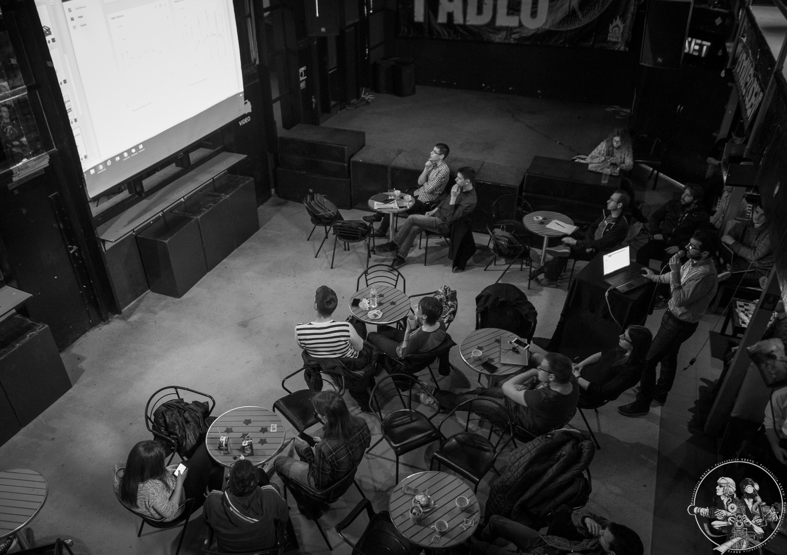

Savez studenata FER-a je neprofitna volonterska organizacija koja djeluje u sklopu Kluba studenata elektrotehnike (KSET) već više od 40 godina. Kroz taj dugi niz godina radili smo na raznoraznim projektima, a ovdje smo predstavili samo neke od njih.
Više o samom Klubu i svim članovima možete saznati u našem portfoliju.
Svi projekti provode članovi Udruge koji su studenti i volonteri.
Job Fair
Projekt je namijenjen povezivanju poslodavaca i studenata FER-a te srodnih tehničkih fakulteta s ciljem prezentacije poduzeća i pružanja uvida studentima u mogućnosti zapošljavanja i razvoja karijere.
Tvrtkama nudimo priliku da stvore brand među ambicioznim mladim ljudima koji će uskoro krenuti u potragu za atraktivnim radnim mjestima, te mogućnost predstavljanja svojih proizvoda i usluga. Izravnim kontaktom sa potencijalnim zaposlenicima, tvrtke imaju priliku prepoznati talentirane i motivirane pojedince i povezati se s njima već danas.
Cilj Job Faira je olakšati studentima put do što kvalitetnijeg zaposlenja, a tvrtkama omogućiti bolji izbor budućih zaposlenika.
Projekt se od 2016. godine provodi zajedno sa FER-om i Centrom karijera FER-a.
Više o Job Fairu moguće je pronaći na službenoj stranici: jobfair.fer.hr.
Powertrip
Stručno putovanje studenata u svrhu upoznavanja procesa proizvodnje električne energije iz različitih izvora energije. Naglasak projekta je educiranje budućih magistara i prvostupnika elektrotehnike o načinima dobivanja električne energije iz termo i nukleranih izvora energije. Hrvatska je zemlja koja veliki dio svoje energetske potrošnje koja svoje potrebe zadovoljava uvozom energije. Danas su aktualne rasprave o nadoknađivanju tog uvoza. Cilj je upoznati buduće magistre i prvostupnike s prednostima i nedostacima rezličitih rješenja te povećati njihovo znanje na tom području. Želimo povećati međusobnu suradnju između budućih magistara struke i znanstvenika u svrhu razvoja hrvatske energetike i gospodarstva.
Dosada su u sklopu projekta posjećene: RHE Velebit, HE Zakučac, HE Peruća, HE Orlovac, NE Krško, TE Plomin, Kontrolni centar HAC – Delnice, Memorijalni centar Nikola Tesla.
Brucošijada FER-a
Brucošijada FER-a se tradicionalno održava toliko dugo da u KSET-u trenutno ne postoje članovi koji bi sa sigurnošću znali reći kada je bila prva. Uvijek uključuju 4 podija, svaki sa svojim pravcem glazbe kako bi mogli najbolje pokriti različite glazbene ukuse naše publike.
Mnogi danas poznati bendovi svoje su prve velike nastupe održali na Brucošijadi FER-a kao Hladno Pivo, TBF, Edo Majka, Toni Cetinski, Darko Rundek, Let 3, Leb i Sol, Urban, Gibonni, Stjepan Jimmy Stanić. Ove godine nastavljamo tradiciju pružanja prilike mladim, perspektivnim bendovima iz Hrvatske i svijeta kao i nekim već proslavljenim bendovima.
Novosti u vezi nadolazeće Brucošijade moguće je pronađi na brucosijada.kset.org.
TechTalk
Serija predavanja koja se održava tijekom cijele akademske godine u samostalnoj organizaciji, ali i često u suradnji sa tvrtkama. Kroz interaktivan način, studenti imaju priliku upoznati se sa najnovijim tehnologijama te steći potrebno znanje i vještine koje su potrebne na njihovim budućim radnim mjestima. Također, tvrtke imaju priliku za predstavljanje svog načina rada i detaljnije upoznati studente, kao svoje buduće zaposlenike, sa svojim proizvodima i njihovim načinom izrade.
 {kind=link}
{kind=link}
Školica praktične elektronike
Školica organizirana od strane članova Tehničke sekcije KSET-a s ciljem nadopunjavanjem praktičnog znanja studenata FER-a. Laboratorijske vježbe na fakultetu često zbog nedostatka vremena i prostora nisu dovoljan izvor znanja koja se pred jednog inženjera predstavljaju u praksi.
Fototečaj
Tečaj fotografije za početnike organiziran od strane Foto sekcije KSET-a. Sastoji se od dva dijela: teorijskog i praktičnog. Teorijski dio pokriva praktične osnove fotografije (osnove fotoaparata, ekspozicija, blenda, filmovi i filtri), mehaniku fotoaparata i optički dizajn objektiva, tehnički elementi fotografije, rad s fotografskom opremom, građu i podjelu filmova te rad u tamnoj komori (razvijanje negativa i pozitiva). U praktičnom dijelu polaznici imaju priliku u praksi primijeniti naučeno te uz iskusne fotografe na individualnoj bazi fotografiraju i u tamnoj komori razvijaju i izrađuju vlastite fotografije.
Planinarska škola
Škola organizirana od strane Planinarske sekcije KSET-a namijenjena je za studente, asistente i profesore. Obuhvaća teorijski i terenski dio, od kojih se teorijski odvija u prostoru KSET-a, a terenski na planinama Hrvatske. Škola polaznicima pruža osnovna znanja i vještine potrbene za sigurno i odgovorno planinarenje, očuvanje okoliša te sportsku rekreaciju. Planinarsku školu vode iskusni planinari planinarske sekcije KSET-a, članovi Saveza izviđača Hrvatske, članovi Hrvatskog planinarskog društva Željezničar i članovi Planinarskog društva Sveučilišta Velebita.